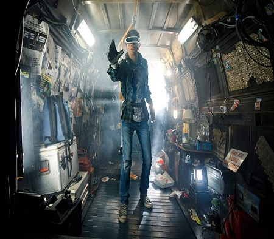
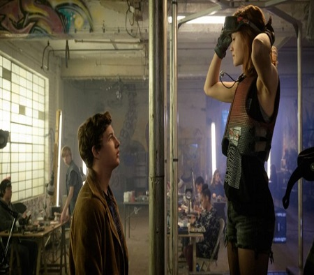
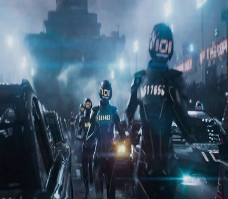

Jogador Nº1 é mais um distopia que aparece por aqui, no QMD. A trama, muito bem elaborada, não parece
ser
coisa de um autor iniciante, um calouro (sim, este é o primeiro livro de Ernest). Tudo começa quando
James
Halliday, o criador de OASIS (um universo virtual [algo como o Second Life] onde é possível namorar,
casar,
trabalhar e fazer tudo que um pessoa real consegue fazer na vida real) morre e deixa um testamento em
vídeo
dizendo que o dono de toda a sua fortuna e poder seria aquele que encontrasse três chaves escondidas
pelo
game que ele criou.
A partir daí, milhões de pessoas ao redor do mundo se dedicam a encontrar os Easter Eggs que James
escondeu, incluindo (ah vá!) nosso protagonista Wade, que, se inspirando na cultura dos Anos 80 (algo
que Halliday apreciava bastante) vai descobrindo aos poucos os segredos que OASIS esconde. Porém, nada
fica escondido nesse ambiente virtual, então, assim que ele descobre a primeira chave, todos se voltam
para Wade, que passa a ser alvo de armadilhas criadas por outros jogadores, principalmente Os Seis,
jogadores contratados por uma grande empresa que quer privatizar o sistema e cobrar taxas abusivas. As
armadilhas querem acabar com Parzival, o avatar de Wade, mas, claro, a personalidade real dele também
está em jogo, pois Os Seis se revelam mesquinhos o bastante para estarem dispostos a acabar com o maior
número de Caça-Ovos possíveis também do outro lado das telas.

No meio disso tudo também existem aqueles que admiram Parzival em OASIS, como Aech, que é dono do Porão,
um espaço exclusivo a Caça-ovos de Elite. Ele e Wade nunca se conheceram pessoalmente, mas são melhores
amigos. Wade também admira outros jogadores também, claro. Art3mis, por exemplo, que é extremamente
focada e durona, dona de um blog que encanta Wade, que acaba se apaixonando, apesar dela achar que isso
pode atrapalhar sua caçada e preferir viver sozinha em OASIS. Um ranking, chamado de Os Cinco do Topo,
traz esses três personagens, junto com Daito e Shoto, dois japoneses que jogam em dupla.
O livro, narrado por Wade/Parzival, traz várias citações a cultura pop dos Anos 80, peças chave para
descobrir os segredos de OASIS. São filmes, séries, músicas, livros, jogos... Mas, não precisa se
preocupar caso não domine essa área, consegui acompanhar normalmente, mesmo sem conhecer nem metade dos
ítens citados.

A escrita de Ernest também é ótima e o modo como a Editora Leya conseguiu trazer isso também ajudou
bastante, afinal, uma boa escrita com uma diagramação mal-feita não valeria de nada, o que não aconteceu
neste caso. Apesar do livro ser bem grandinho (quase 500 páginas), nada ficou cansativo pois o tamanho
das letras e fontes escolhidas são uma belezura.
Outro ponto positivo é o fato dos personagens terem dupla personalidade, não por serem bipolares, mas
por terem uma identidade na vida real e outra em OASIS. Isso traz grande surpresas quando descobrimos
quem eles realmente são (a maior delas, claro, é a identidade de Aech!).

O único defeito que eu colocaria no livro (mas que com a medida do tempo me acostumei) foi o fato de
traduzirem Easter Egg como Ovo de Páscoa. A tradução está corretíssima, mas se mostra meio desnecessária
pois este termo, quando se trata de tecnologia e games, não é traduzido constantemente.
O livro é incrível e depois de tantos elogios não poderia dar uma nota senão 5! Agora, nos resta esperar
a adaptação cinematográfica do livro, que tem os direitos adquiridos pela Warner que, assim como The
Perks Of Being a Wallflower, terá um roteiro escrito pelo próprio autor.